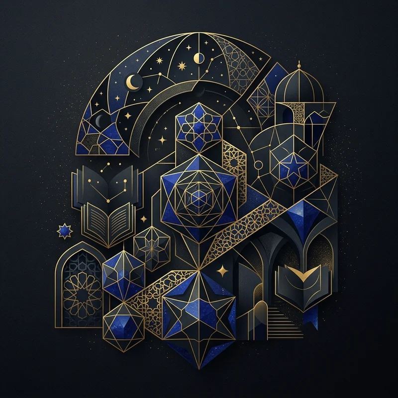

🔍 ZoomWichtige Denker
Kerngedanken
Die Denker der islamischen Blütezeit verbanden griechische Logik mit islamischer Theologie und legten fundamentale Grundlagen für moderne Wissenschaft und Metaphysik.
Wissen testen
Bist du bereit, dein Wissen über diese Epoche auf die Probe zu stellen?
Zum Quiz